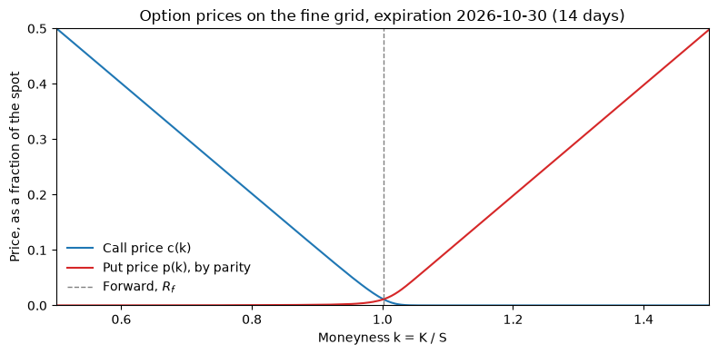
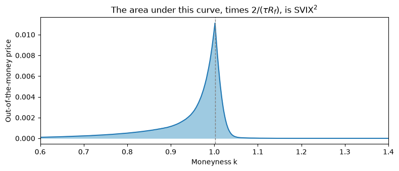
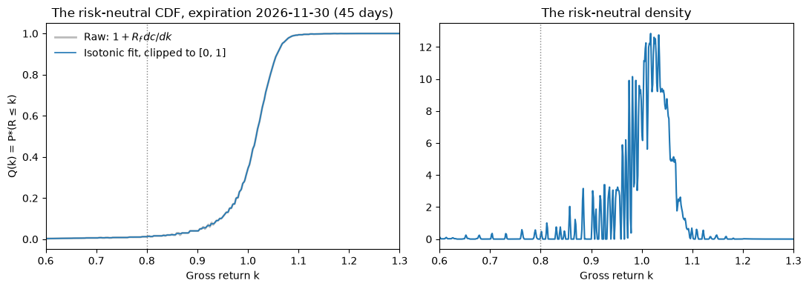
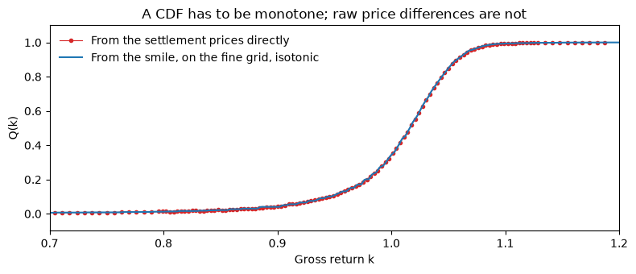
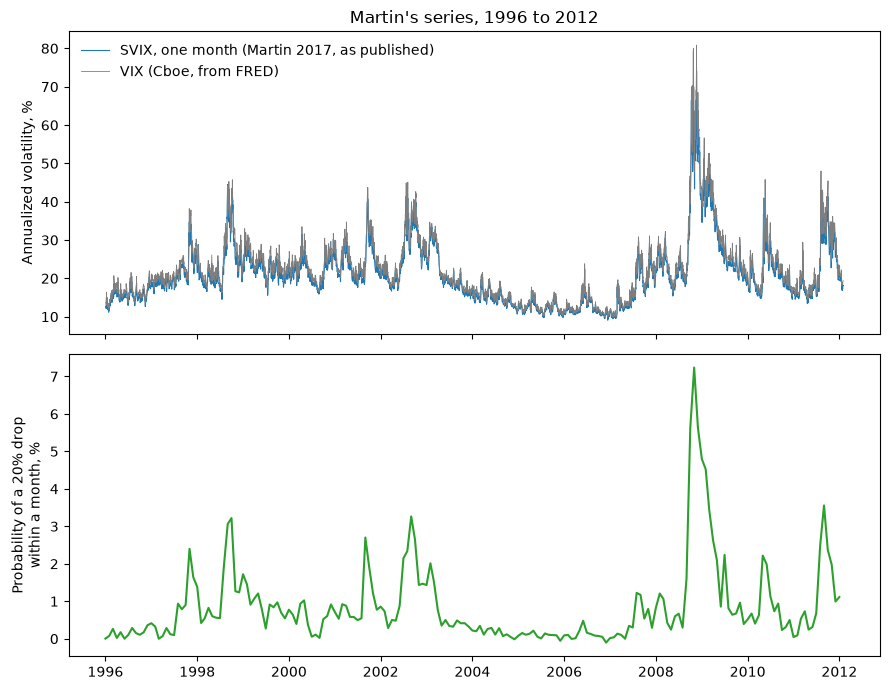

02. Replicating SVIX and the Probability of a Crash#
Ian Martin’s What is the Expected Return on the Market? (QJE 2017) builds two numbers from index option prices and publishes both on his website: SVIX, a volatility index that measures the variance the market expects for the S&P 500, and the probability of a 20% decline in the index over the coming month. CME now computes the SVIX construction every day for its major contracts as the CVOL family of volatility indexes, from the same settlement prices guide 01 pulled.
This guide rebuilds both numbers for one session, step by step, and
checks them against what CME and Cboe publish. The three formulas it
derives are the three functions the homework asks you to complete:
svix.svix_squared, the Breeden-Litzenberger step in
rnd.risk_neutral_cdf, and crash_prob.crash_probability.
In this guide
From the smile to a priced grid.
SVIX²: the integral of option prices across strikes.
The risk-neutral distribution: the slope of the call curve.
From risk-neutral to real: the log investor’s crash probability.
Martin’s published series, and CME’s.
from pathlib import Path
import matplotlib.pyplot as plt
import numpy as np
import pandas as pd
import crash_prob
import pull_es_options
import pull_fred
import rnd
import smile
import svix
from settings import config
DATA_DIR = Path(config("DATA_DIR"))
MANUAL_DATA_DIR = Path(config("MANUAL_DATA_DIR"))
pd.set_option("display.width", 120)
options = pull_es_options.load_es_options()
fred = pull_fred.load_fred()
latest = options["date"].max()
session = options[options["date"] == latest]
rate = pull_fred.rate_on(fred, latest)
near, far = smile.bracketing_expiries(session)
print(f"Session {latest.date()}; expirations {pd.Timestamp(near).date()} and {pd.Timestamp(far).date()} bracket 30 days; "
f"one-month Treasury yield {100 * rate:.2f}%")
Session 2026-10-16; expirations 2026-10-30 and 2026-11-30 bracket 30 days; one-month Treasury yield 4.12%
1. From the smile to a priced grid#
Guide 01 ended with the smile for one expiration: an implied volatility
at each out-of-the-money strike, with the strike expressed as moneyness
\(k = K / S\). Both numbers this guide computes are integrals across
strikes, and the exchange’s strikes are a discrete, uneven grid. So the
engine (rnd.priced_grid) interpolates the smile onto a fine grid of
2,000 points on \(k \in [1/3, 3]\), linearly between observed strikes and
flat beyond them, and prices a call at every point with the
Black-Scholes formula. The spot is normalized to 1, so a call price is a
fraction of the spot, the forward is \(R_f = e^{r\tau}\), and put prices
follow from put-call parity, \(p(k) = c(k) - 1 + k / R_f\).
This is the convention of Martin and Shi’s Appendix D, and it is the convention of every formula below: a strike and a gross-return level are the same number.
surface_near = smile.smile_for(options, latest, near, rate)
surface_far = smile.smile_for(options, latest, far, rate)
cdf_near = rnd.risk_neutral_cdf(surface_near, rate)
cdf_far = rnd.risk_neutral_cdf(surface_far, rate)
fig, ax = plt.subplots(figsize=(8, 4))
ax.plot(cdf_near.grid, cdf_near.call_grid, label="Call price c(k)", color="#1f77b4")
ax.plot(cdf_near.grid, cdf_near.put_grid, label="Put price p(k), by parity", color="#d62728")
ax.axvline(cdf_near.forward, color="gray", ls="--", lw=1, label="Forward, $R_f$")
ax.set_xlim(0.5, 1.5)
ax.set_ylim(0, 0.5)
ax.set_xlabel("Moneyness k = K / S")
ax.set_ylabel("Price, as a fraction of the spot")
ax.set_title(f"Option prices on the fine grid, expiration {pd.Timestamp(near).date()} ({int(surface_near['days_to_maturity'].iloc[0])} days)")
ax.legend(frameon=False)
fig.tight_layout()
plt.show()

2. SVIX²: the integral of option prices across strikes#
Martin defines SVIX² as the risk-neutral variance of the market’s gross return \(R_T\), normalized by the risk-free rate and annualized:
The reason it can be computed is a fact about option prices. Any smooth payoff \(g(R_T)\) can be replicated by a bond, a forward, and a portfolio of out-of-the-money puts and calls, with weight \(g''(K)\) on the option struck at \(K\) (Breeden and Litzenberger 1978, Carr and Madan 1998). For \(g(R) = R^2\) the weights are all equal to 2, and the price of the squared return is \(2\) times the integral of option prices across strikes. Subtracting the squared mean, which is \(R_f^2\), gives Martin’s equation (12). With the spot normalized to 1:
Puts below the forward, calls above it, every strike weighted equally. The VIX, by contrast, prices the log contract, whose weights are \(1/K^2\); it leans harder on the put wing, which is why the VIX is above SVIX when the smirk is steep. CME’s CVOL uses Martin’s weights.
The integrand, out-of-the-money prices across the grid:
grid = cdf_near.grid
otm = np.where(grid <= cdf_near.forward, cdf_near.put_grid, cdf_near.call_grid)
fig, ax = plt.subplots(figsize=(8, 3.5))
ax.fill_between(grid, otm, color="#9ecae1")
ax.plot(grid, otm, color="#1f77b4")
ax.axvline(cdf_near.forward, color="gray", ls="--", lw=1)
ax.set_xlim(0.6, 1.4)
ax.set_xlabel("Moneyness k")
ax.set_ylabel("Out-of-the-money price")
ax.set_title("The area under this curve, times $2 / (\\tau R_f)$, is SVIX$^2$")
fig.tight_layout()
plt.show()
month_expiry = smile.closest_expiry(session) # the expiration closest to 30 days
cdf_month = {near: cdf_near, far: cdf_far}[month_expiry]
svix2_near = svix.svix_squared(cdf_near)
svix2_far = svix.svix_squared(cdf_far)
svix2_30 = svix.interpolate_variance(svix2_near, cdf_near.maturity_years, svix2_far, cdf_far.maturity_years)
vix_today = fred.loc[fred["date"] == latest, "vix"].iloc[0]
print(f"SVIX² at {int(surface_near['days_to_maturity'].iloc[0])} days: {svix2_near:.5f} -> SVIX {svix.svix_index(svix2_near):.2f}")
print(f"SVIX² at {int(surface_far['days_to_maturity'].iloc[0])} days: {svix2_far:.5f} -> SVIX {svix.svix_index(svix2_far):.2f}")
print(f"Interpolated to 30 days: SVIX² {svix2_30:.5f} -> SVIX {svix.svix_index(svix2_30):.2f}")
print(f"The VIX closed at {vix_today:.2f} on {latest.date()}")

SVIX² at 14 days: 0.03407 -> SVIX 18.46
SVIX² at 45 days: 0.03058 -> SVIX 17.49
Interpolated to 30 days: SVIX² 0.03136 -> SVIX 17.71
The VIX closed at 19.99 on 2026-10-16
Two expirations rarely sit exactly 30 days out, so the two SVIX² values are combined the way the VIX combines its two expirations: total variance (SVIX² times \(\tau\)) is linear in time to expiry, so interpolate it to 30 days and divide. In VIX units, 100 times the square root, SVIX lands below the VIX, as it should.
A check against a closed form. Under a flat smile the return is
lognormal, \(\mathrm{var}^*(R/R_f) = e^{\sigma^2\tau} - 1\), and the
integral must give \((e^{\sigma^2\tau} - 1)/\tau\), a touch above
\(\sigma^2\). That is the first test of svix_squared.
3. The risk-neutral distribution: the slope of the call curve#
A call struck at \(k\) pays \((R_T - k)^+\), so its discounted price is \(c(k) = E^*[(R_T - k)^+] / R_f\). Differentiate in the strike: the derivative of the payoff is \(-1\) where the option finishes in the money and zero elsewhere, so
This is Breeden and Litzenberger’s result: the risk-neutral CDF of the return is read off the slope of the call curve, and the density off its curvature. On the fine grid the slope is a numerical gradient. The raw result is not quite a CDF, because the interpolated smile is piecewise linear and the call curve’s slope has kinks; an isotonic regression, the closest non-decreasing function, fixes that, and a clip to \([0, 1]\) finishes the job. From here on the horizon is one month, so the distribution is read off the expiration closest to 30 days. Here is both, with the density:
grid = cdf_month.grid
R_f = cdf_month.forward
q_raw = 1.0 + R_f * np.gradient(cdf_month.call_grid, grid)
fig, (ax1, ax2) = plt.subplots(1, 2, figsize=(11, 4))
ax1.plot(grid, q_raw, color="#bbbbbb", lw=2, label="Raw: $1 + R_f\\, dc/dk$")
ax1.plot(grid, cdf_month.values, color="#1f77b4", lw=1.2, label="Isotonic fit, clipped to [0, 1]")
ax1.axvline(0.80, color="gray", ls=":", lw=1)
ax1.set_xlim(0.6, 1.3)
ax1.set_xlabel("Gross return k")
ax1.set_ylabel("Q(k) = P*(R ≤ k)")
ax1.set_title(f"The risk-neutral CDF, expiration {pd.Timestamp(month_expiry).date()} ({int(round(cdf_month.maturity_years * 365))} days)")
ax1.legend(frameon=False, loc="upper left")
density = np.gradient(cdf_month.values, grid)
ax2.plot(grid, density, color="#1f77b4")
ax2.axvline(0.80, color="gray", ls=":", lw=1)
ax2.set_xlim(0.6, 1.3)
ax2.set_xlabel("Gross return k")
ax2.set_title("The risk-neutral density")
fig.tight_layout()
plt.show()
p_star_20 = crash_prob.risk_neutral_crash_prob(cdf_month, 0.80)
p_star_10 = crash_prob.risk_neutral_crash_prob(cdf_month, 0.90)
print(f"Risk-neutral probability of a 20% drop by {pd.Timestamp(month_expiry).date()}: {100 * p_star_20:.2f}%; of a 10% drop: {100 * p_star_10:.2f}%")

Risk-neutral probability of a 20% drop by 2026-11-30: 1.21%; of a 10% drop: 4.02%
The density has the shape every index option trader knows: a heavy left tail, bought with the put smirk. \(Q(0.8)\) is the risk-neutral probability of a 20% drop, and it is the number the options market charges for, not the number it expects.
Why the isotonic step is there. Try the same derivative on the raw settlement prices, strike by strike, without the smile and the fine grid:
surface_month = {near: surface_near, far: surface_far}[month_expiry]
raw = session[(session["expiration"] == month_expiry) & (session["cp_flag"] == "C") & (session["settle"] > smile.MIN_SETTLE)].sort_values("strike")
spot = surface_month["spot_price"].iloc[0]
k_raw = raw["strike"].to_numpy() / spot
c_raw = raw["settle"].to_numpy() / spot
q_from_prices = 1.0 + R_f * np.gradient(c_raw, k_raw)
fig, ax = plt.subplots(figsize=(8, 3.5))
ax.plot(k_raw, q_from_prices, ".-", color="#d62728", lw=0.8, label="From the settlement prices directly")
ax.plot(grid, cdf_month.values, color="#1f77b4", label="From the smile, on the fine grid, isotonic")
ax.set_xlim(0.7, 1.2)
ax.set_ylim(-0.1, 1.1)
ax.set_xlabel("Gross return k")
ax.set_ylabel("Q(k)")
ax.legend(frameon=False, loc="upper left")
ax.set_title("A CDF has to be monotone; raw price differences are not")
fig.tight_layout()
plt.show()

Settlement prices are marked strike by strike, to the tick, and their differences are noisy; the “CDF” they give goes up and down. OptionMetrics’ smoothed surface hides this from you, because the vendor has already fitted a smile. Working from the exchange’s prices, you see the problem and the cure.
The test of risk_neutral_cdf is the same flat-smile check: under a
constant volatility the CDF must be the lognormal’s, in closed form.
4. From risk-neutral to real: the log investor’s crash probability#
\(Q(0.8)\) overstates the probability of a crash, because a dollar in a crash state is worth more than a dollar in a boom, and option prices weight states by that marginal utility. Martin’s way out is to take the perspective of an investor with log utility whose whole portfolio is the market. Such an investor’s marginal utility is \(1/R_T\), so for any payoff \(X_T\) her expectation and the risk-neutral one are related by
the formula on the slide of his talk: what a log investor would have to believe to be happy holding the market. Apply it to the indicator of a crash, \(X_T = 1\{R_T \le \alpha\}\):
And the numerator is one more Breeden-Litzenberger expression. A put struck at \(\alpha\) pays \((\alpha - R_T)^+ = \alpha\,1\{R_T \le \alpha\} - R_T\,1\{R_T \le \alpha\}\), so its price is \(p(\alpha) = [\alpha\, Q(\alpha) - E^*(R_T 1\{R_T \le \alpha\})] / R_f\), which rearranges to
Everything on the right is on the grid: \(Q(\alpha)\) from step 3, \(p(\alpha)\)
the put price from step 1. The risk-neutral probability, shrunk by the
put’s own price. Martin and Shi (2025) generalize the investor to power
utility with risk aversion \(\gamma\), their equation (7),
\(P = E^*[R^\gamma 1\{R \le \alpha\}] / E^*[R^\gamma]\), calibrate
\(\gamma = 2\), and compute the moments from option prices by their
Result 5 (utility_correction.py); \(\gamma = 1\) recovers Martin’s
formula. The three numbers for this session:
rows = []
for label, alpha in [("20% drop", 0.80), ("10% drop", 0.90)]:
rows.append({
"event": f"{label} by {pd.Timestamp(month_expiry).date()}",
"risk-neutral, P*": crash_prob.risk_neutral_crash_prob(cdf_month, alpha),
"log investor (Martin 2017)": crash_prob.crash_probability(cdf_month, alpha),
"power utility, gamma = 2 (Martin and Shi 2025)": crash_prob.crash_probability_power(cdf_month, alpha),
})
pd.DataFrame(rows).set_index("event").style.format("{:.2%}")
| risk-neutral, P* | log investor (Martin 2017) | power utility, gamma = 2 (Martin and Shi 2025) | |
|---|---|---|---|
| event | |||
| 20% drop by 2026-11-30 | 1.21% | 0.80% | 0.54% |
| 10% drop by 2026-11-30 | 4.02% | 3.19% | 2.58% |
The ordering is the content: the more risk-averse the investor, the more of the option price is marginal utility rather than probability, and the smaller the real-world probability she reads out of it.
The test of crash_probability: under a flat smile the log investor’s
probability has a closed form too, \(N\!\left((\ln a - s^2/2)/s\right)\) with
\(a = \alpha / R_f\) and \(s = \sigma\sqrt{\tau}\).
5. Martin’s published series, and CME’s#
Martin publishes SVIX² and the crash probability from January 1996 to January 2012, computed from S&P 500 index options. Here is his SVIX next to the VIX, and his monthly probability of a 20% drop at one month:
martin_svix = pd.read_csv(MANUAL_DATA_DIR / "martin_2017" / "svix2.csv", parse_dates=["date"])
martin_crash = pd.read_csv(MANUAL_DATA_DIR / "martin_2017" / "crashprob.csv")
martin_crash["date"] = pd.to_datetime(martin_crash[["year", "month"]].assign(day=1))
vix = fred.dropna(subset=["vix"])
fig, (ax1, ax2) = plt.subplots(2, 1, figsize=(9, 7), sharex=True)
ax1.plot(martin_svix["date"], 100 * np.sqrt(martin_svix["m1"]), label="SVIX, one month (Martin 2017, as published)", color="#1f77b4", lw=0.8)
v = vix[(vix["date"] >= martin_svix["date"].min()) & (vix["date"] <= martin_svix["date"].max())]
ax1.plot(v["date"], v["vix"], label="VIX (Cboe, from FRED)", color="#7f7f7f", lw=0.6)
ax1.set_ylabel("Annualized volatility, %")
ax1.legend(frameon=False)
ax1.set_title("Martin's series, 1996 to 2012")
ax2.plot(martin_crash["date"], 100 * martin_crash["m1"], color="#2ca02c")
ax2.set_ylabel("Probability of a 20% drop\nwithin a month, %")
fig.tight_layout()
plt.show()

The daily monitor of guide 03 continues the first chart from today forward, and guide 04 reproduces the second one from the OptionMetrics surface and checks it against these numbers.
Does it match CME? CME’s E-mini S&P 500 CVOL index is the same
construction on the same settlement prices, so the two should agree to
within the differences of strike grid and interpolation, about a vol
point. CME does not give the history away, so readings are recorded by
hand in data_manual/cme_cvol_snapshots.csv, and
test_svix_matches_cvol_snapshot compares each one with our 30-day SVIX
for the same session:
snapshots = pd.read_csv(MANUAL_DATA_DIR / "cme_cvol_snapshots.csv", parse_dates=["date"])
if snapshots.empty:
print("No CVOL reading recorded yet. Capture the index at cmegroup.com/cvol and add a row.")
else:
import monitor
history = monitor.load_history()
compare = snapshots.merge(history[["date", "svix_30", "vix"]], on="date", how="left")
display(compare[["date", "product", "cvol_index", "svix_30", "vix", "source"]])
No CVOL reading recorded yet. Capture the index at cmegroup.com/cvol and add a row.
The homework#
Part B asks for the three formulas derived here, in src/svix.py,
src/rnd.py, and src/crash_prob.py. Each function’s docstring repeats
its formula, and uv run pytest src/test_svix.py src/test_rnd.py src/test_crash_prob.py
checks them offline against the closed forms. With the three in place,
uv run doit computes this session, and every session in the pull, into
the monitor’s history, which is guide 03.